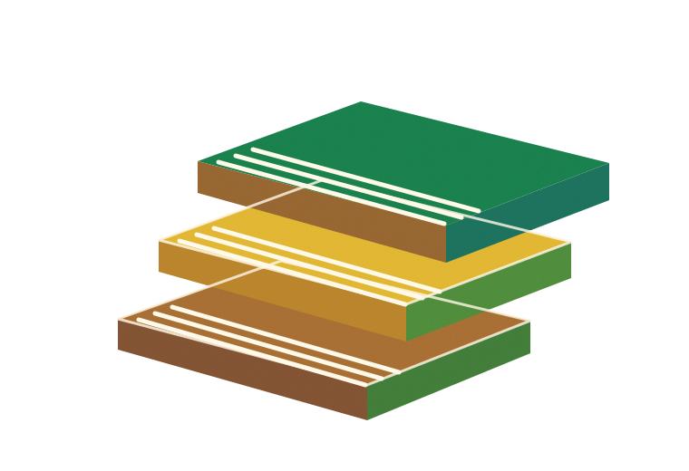
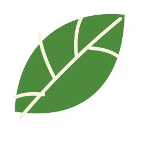
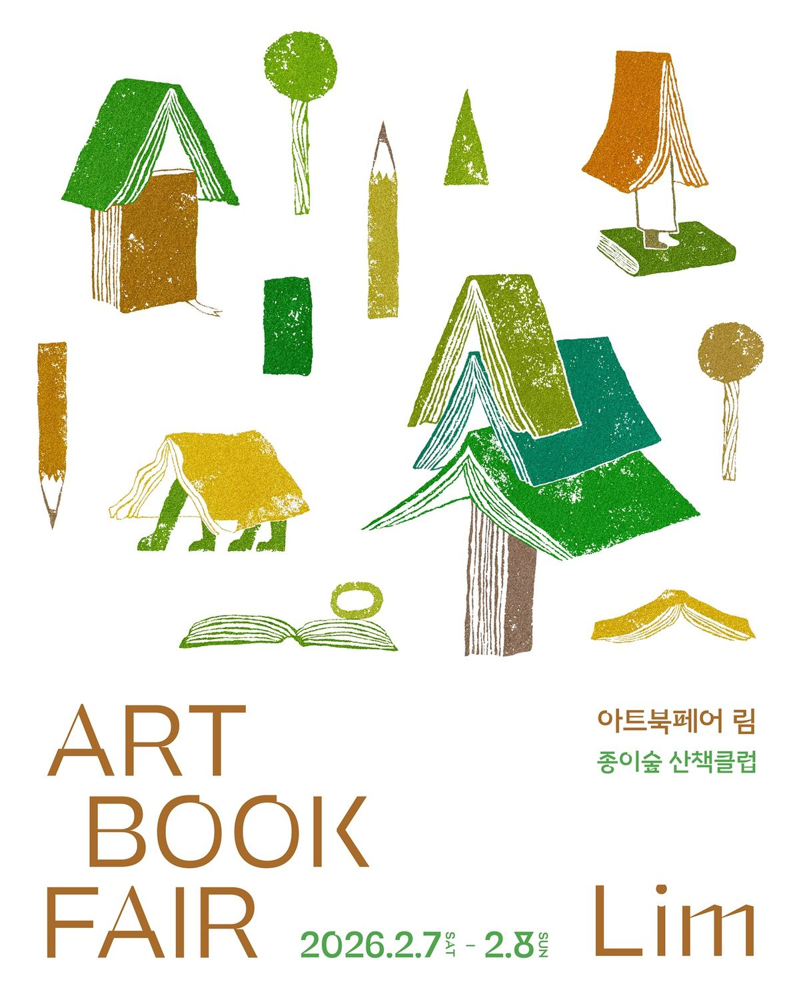

01 / EXHIBITION
독립출판 마켓
작가의 취향과 이야기가 담긴
독립출판물을 직접 만나보세요.


readPAPER, PEOPLE & LITTLE STORIES
아트북페어 림은 독립출판 작가와 작은 출판사가 만든 책을 만나고, 각자의 취향을 나누는 작은 축제입니다. 천천히 둘러보고, 마음에 드는 책을 발견하고, 새로운 이야기를 데려가세요.
작가의 취향과 이야기가 담긴
독립출판물을 직접 만나보세요.
책을 만든 사람의 생각과
제작 비하인드 스토리를 나눠요.
나만의 작은 책 한 권을
직접 만들어 보는 시간.
각자의 방식으로 이야기를 엮는
독립출판 창작자들을 소개합니다.
YOUR WEEKEND, BETWEEN THE PAGES
2026년 2월 7일 토요일부터 8일 일요일까지
아트북페어 림에서 만나요.
